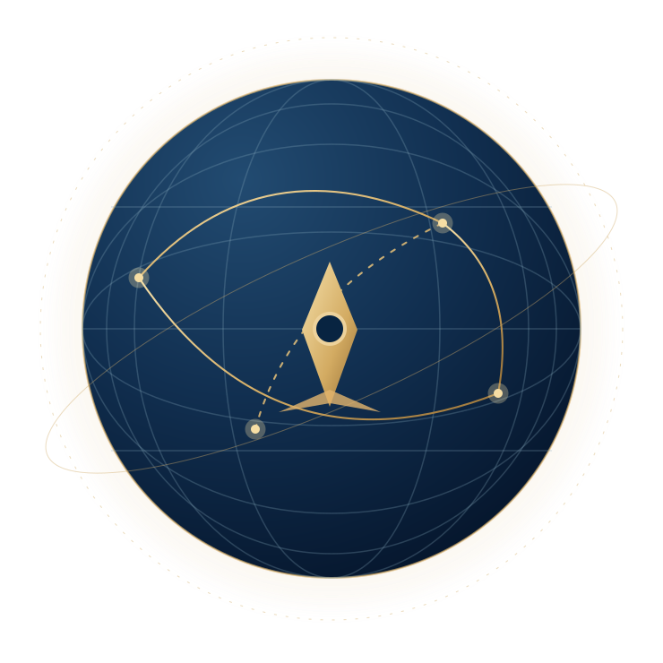

Connection
Build professional dialogue and mutual understanding among notaries working under different legal systems.
Documents Without Borders Global · Home of Notarizationship™
Connecting notaries across legal systems. Making international document processes easier to understand. Building a world where trusted information can travel farther.

One world.
Distinct legal systems.
Shared responsibility.
The purpose
From academic records and family documents to business instruments and powers of attorney, cross-border paperwork can involve multiple authorities, languages and legal frameworks.
Documents Without Borders Global (DWB Global) is developing an educational approach to connect notarial professionals and help the public identify relevant official processes, without replacing the authorities responsible for them.
Read our missionThe project also preserves its founding international dialogue and roadmap from the earlier institutional website.
Explore the global dialogueBuild professional dialogue and mutual understanding among notaries working under different legal systems.
Make information about apostilles, authentication and legalisation more accessible and easier to verify.
Advance Notarizationship™, a community idea centered on recognition, shared learning and professional solidarity.
A practical vision
There is no universal checklist for international document acceptance. Rules vary by jurisdiction, document type and receiving authority.
Future country and territory guides will require source checks, jurisdiction-specific review and regular updates.
What we're building
Our programs are proposed areas of work. Launch timing and scope depend on review, capacity and partnerships.
Research-led country and territory profiles with official sources and route-specific considerations.
Learn moreA planned directory that would account for differences in credentials, appointments and practice authority.
Learn moreMultilingual explainers and an ambition to support free professional training in developing nations.
Learn moreNotarizationship™ is a term coined by founder Oswald Joseph Bien-Aimé for professional connection, shared learning and belonging. It is not a legal status, certification or license and does not make different notarial systems interchangeable.
Notarizationship™ describes a spirit of professional connection, shared learning and belonging. It is not a legal status, certification or license. It honors the diversity of how notaries serve in their own jurisdictions.
Discover Notarizationship™
A future global gathering
Concept stageA proposed global notary conference and Dubai Notarizationship Summit would convene professionals for education, dialogue and international cooperation.
The invitation
Whether you work in a notarial profession, education, legal services or international document administration, there is room to contribute to the conversation.